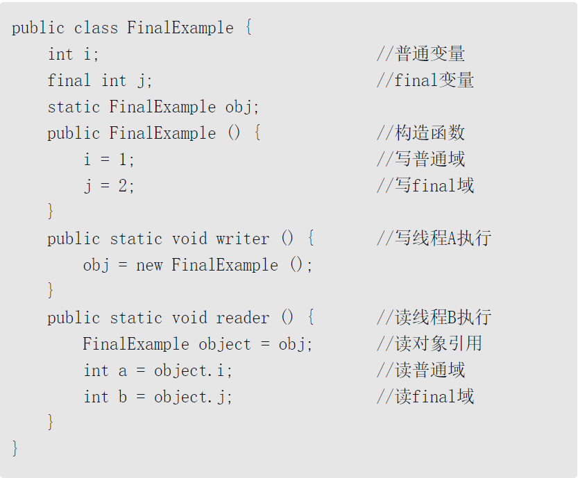
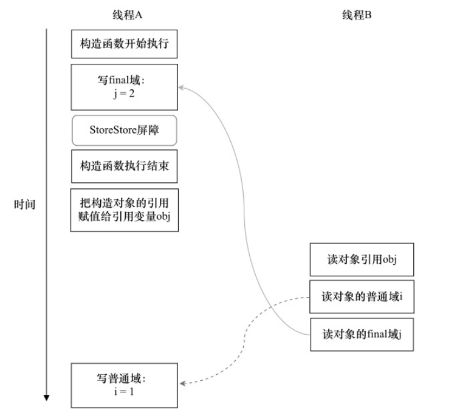
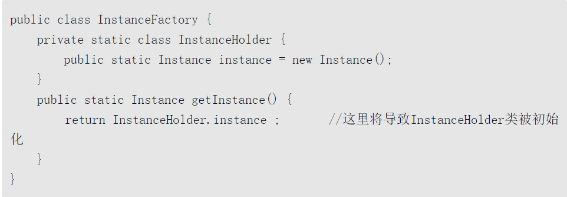
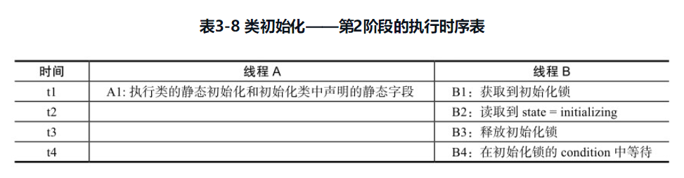

申明 所有内容摘自 《java并发编程的艺术 一书》 方腾飞 魏鹏 程晓明
本编所有内容均为读书笔记
volatile域内存知识
如何减少cpu上下文切换
- 避免使用锁：无锁并发编程，多线程竞争锁时，会引起上下问切换，所以多线程处理时，可以用一些办法来避免使用锁，如将数据的ID按照Hash算法取模分段，不同的线程处理不同段的数据
- CAS算法：java的atomic包使用CAS算法来更新数据，而不需要加锁
- 使用最少线程：避免创建不需要的线程，比如任务很少，但是创建了很多线程来处理，这样会造成大量线程都处于等待状态
- 协程：在单线程里实现多任务的调度，并在单线程里维持多个任务间的切换。
volatile 和sychronized
如果volatile变量修饰符使用恰当的话，它比synchronized的使用和执行成本更低，因为它不会引起线程上下文的切换和调度。

如果对声明了volatile的变量进行写操作，JVM就会向处理器发送一条Lock前缀的指令，将这个变量所在缓存行的数据写回到系统内存
每个处理器通过嗅探在总线上传播的数据来检查自己缓存的值是不是过期了，当处理器发现自己缓存行对应的内存地址被修改，就会将当前处理器的缓存行设置成无效状态，当处理器对这个数据进行修改操作的时候，会重新从系统内存中把数据读到处理器缓存里。
volatile实现原则
- Lock前缀指令会引起处理器缓存回写到内存。Lock前缀指令导致在执行指令期间，声言处理器的LOCK#信号。在多处理器环境中，LOCK#信号确保在声言该信号期间，处理器可以独占任何共享内存[插图]。但是，在最近的处理器里，LOCK #信号一般不锁总线，而是锁缓存，毕竟锁总线开销的比较大。
- 一个处理器的缓存回写到内存会导致其他处理器的缓存无效。IA-32处理器和Intel 64处理器使用MESI（修改、独占、共享、无效）控制协议去维护内部缓存和其他处理器缓存的一致性
jdk 7追加字节优化性能
- 将共享变量追加到64字节。一些处理器不支持部份填充缓存行，如果队列头节点和尾节点都不足64字节的话，处理器会将他们读到同一个高速缓存行中，在多处理器下每个处理器都会缓存同样的头、尾节点，当一个处理器试图修改头节点时，会将整个缓存行锁定，那么在缓存一致性机制的作用下，会导致其他处理器不能访问自己高速缓存中的尾节点，而队列的入队和出队操作则需要不停修改头节点和尾节点，所以在多处理器的情况下将会严重影响到队列的入队和出队效率。Doug lea使用追加到64字节的方式来填满高速缓冲区的缓存行，避免头节点和尾节点加载到同一个缓存行，使头、尾节点在修改时不会互相锁定。
偏向锁：当一个线程访问同步块并获取锁时，会在对象头和栈帧中的锁记录里存储锁偏向的线程ID，以后该线程在进入和退出同步块时不需要进行CAS操作来加锁和解锁，只需简单地测试一下对象头的Mark Word里是否存储着指向当前线程的偏向锁。如果测试成功，表示线程已经获得了锁。如果测试失败，则需要再测试一下Mark Word中偏向锁的标识是否设置成1（表示当前是偏向锁）：如果没有设置，则使用CAS竞争锁；如果设置了，则尝试使用CAS将对象头的偏向锁指向当前线程。
轻量级锁：线程在执行同步块之前，JVM会先在当前线程的栈桢中创建用于存储锁记录的空间，并将对象头中的Mark Word复制到锁记录中，官方称为Displaced Mark Word。然后线程尝试使用CAS将对象头中的Mark Word替换为指向锁记录的指针。如果成功，当前线程获得锁，如果失败，表示其他线程竞争锁，当前线程便尝试使用自旋来获取锁。

cpu如何保证原子性
总线锁：线锁就是使用处理器提供的一个LOCK #信号，当一个处理器在总线上输出此信号时，其他处理器的请求将被阻塞住，那么该处理器可以独占共享内存。
缓存锁：指内存区域如果被缓存在处理器的缓存行中，并且在Lock操作期间被锁定，那么当它执行锁操作回写到内存时，处理器不在总线上声言LOCK #信号，而是修改内部的内存地址，并允许它的缓存一致性机制来保证操作的原子性，因为缓存一致性机制会阻止同时修改由两个以上处理器缓存的内存区域数据，当其他处理器回写已被锁定的缓存行的数据时，会使缓存行无效。
- 两种情况不会使用缓存锁
- 第一种情况是：当操作的数据不能被缓存在处理器内部，或操作的数据跨多个缓存行（cache line）时，则处理器会调用总线锁定。
- 第二种情况是：有些处理器不支持缓存锁定。对于Intel 486和Pentium处理器，就算锁定的内存区域在处理器的缓存行中也会调用总线锁定。
- 两种情况不会使用缓存锁
CAS 原子操作的问题
ABA问题：但是如果一个值原来是A，变成了B，又变成了A，那么使用CAS进行检查时会发现它的值没有发生变化，但是实际上却变化了。ABA问题的解决思路就是使用版本号。在变量前面追加上版本号，每次变量更新的时候把版本号加1，那么A→B→A就会变成1A→2B→3A。
- 解决办法：从Java 1.5开始，JDK的Atomic包里提供了一个类AtomicStampedReference来解决ABA问题。这个类的compareAndSet方法的作用是首先检查当前引用是否等于预期引用，并且检查当前标志是否等于预期标志，如果全部相等，则以原子方式将该引用和该标志的值设置为给定的更新值。
循环时间长开销大。自旋CAS如果长时间不成功，会给CPU带来非常大的执行开销。
只能保证一个共享变量的原子操作。还有一个取巧的办法，就是把多个共享变量合并成一个共享变量来操作。比如，有两个共享变量i=2,j=a，合并一下ij=2a，然后用CAS来操作ij。
使用锁机制实现原子操作锁机制保证了只有获得锁的线程才能够操作锁定的内存区域。JVM内部实现了很多种锁机制，有偏向锁、轻量级锁和互斥锁。有意思的是除了偏向锁，JVM实现锁的方式都用了循环CAS，即当一个线程想进入同步块的时候使用循环CAS的方式来获取锁，当它退出同步块的时候使用循环CAS释放锁。
以何种机制来交换信息
指令重排序
在执行程序时，为了提高性能，编译器和处理器常常会对指令做重排序。重排序分3种类型。
- 1）编译器优化的重排序。编译器在不改变单线程程序语义的前提下，可以重新安排语句的执行顺序。
- 2）指令级并行的重排序。现代处理器采用了指令级并行技术（Instruction-Level Parallelism，ILP）来将多条指令重叠执行。如果不存在数据依赖性，处理器可以改变语句对应机器指令的执行顺序。
- 3）内存系统的重排序。由于处理器使用缓存和读/写缓冲区，这使得加载和存储操作看上去可能是在乱序执行。
1属于编译器重排序，2和3属于处理器重排序;
对于编译器，JMM的编译器重排序规则会禁止特定类型的编译器重排序（不是所有的编译器重排序都要禁止）。对于处理器重排序，JMM的处理器重排序规则会要求Java编译器在生成指令序列时，插入特定类型的内存屏障（Memory Barriers，Intel称之为Memory Fence）指令，通过内存屏障指令来禁止特定类型的处理器重排序。
并发编程模型分类
通过以批处理的方式刷新写缓冲区，以及合并写缓冲区中对同一内存地址的多次写，减少对内存总线的占用。虽然写缓冲区有这么多好处，但每个处理器上的写缓冲区，仅仅对它所在的处理器可见。这个特性会对内存操作的执行顺序产生重要的影响：处理器对内存的读/写操作的执行顺序，不一定与内存实际发生的读/写操作顺序一致！
- sparc-TSO和X86拥有相对较强的处理器内存模型，它们仅允许对写-读操作做重排序
StoreLoad Barriers是一个“全能型”的屏障，它同时具有其他3个屏障的效果。
执行该屏障开销会很昂贵，因为当前处理器通常要把写缓冲区中的数据全部刷新到内存中（Buffer Fully Flush）。
happens-before
java使用新的JSR-133内存模型。在JMM中如果一个操作执行的结果需要对另一个操作可见，那么这两个操作之间必须要在happens-before关系。
与程序员密切相关的happens-before规则如下。
- 程序顺序规则：一个线程中的每个操作，happens-before于该线程中的任意后续操作。
- 监视器锁规则：对一个锁的解锁，happens-before于随后对这个锁的加锁。
- volatile变量规则：对一个volatile域的写，happens- before于任意后续对这个volatile域的读。
- 传递性：如果A happens-before B，且B happens-before C，那么Ahappens-before C。
happens-before理解
顺序一致性模型
- 1）一个线程中的所有操作必须按照程序的顺序来执行。
- 2）（不管程序是否同步）所有线程都只能看到一个单一的操作执行顺序。在顺序一致性内存模型中，每个操作都必须原子执行且立刻对所有线程可见。
当多个线程并发执行时，图中的开关装置能把所有线程的所有内存读/写操作串行化（即在顺序一致性模型中，所有操作之间具有全序关系）。
CPU总线事务
总线事务包括读事务（Read Transaction）和写事务（Write Transaction）。读事务从内存传送数据到处理器，写事务从处理器传送数据到内存，每个事务会读/写内存中一个或多个物理上连续的字。
在一个处理器执行总线事务期间，总线会禁止其他的处理器和I/O设备执行内存的读/写。
当JVM在这种处理器上运行时，可能会把一个64位long/double型变量的写操作拆分为两个32位的写操作来执行。这两个32位的写操作可能会被分配到不同的总线事务中执行，此时对这个64位变量的写操作将不具有原子性。
从JSR -133内存模型开始（即从JDK5开始），仅仅只允许把一个64位long/double型变量的写操作拆分为两个32位的写操作来执行，任意的读操作在JSR-133中都必须具有原子性（即任意读操作必须要在单个读事务中执行）。
volatile特点
- 可见性。对一个volatile变量的读，总是能看到（任意线程）对这个volatile变量最后的写入。
- 原子性：对任意单个volatile变量的读/写具有原子性，但类似于volatile++这种复合操作不具有原子性。
每一个箭头链接的两个节点，代表了一个happens-before关系。黑色箭头表示程序顺序规则；橙色箭头表示volatile规则；蓝色箭头表示组合这些规则后提供的happens-before保证。
里A线程写一个volatile变量后，B线程读同一个volatile变量。A线程在写volatile变量之前所有可见的共享变量(即写之前的值都写入到JMM中)，在B线程读同一个volatile变量后，将立即变得对B线程可见。
线程A写一个volatile变量，随后线程B读这个volatile变量，这个过程实质上是线程A通过主内存向线程B发送消息。
volatile重排序规则表
- 当第二个操作是volatile写时，不管第一个操作是什么，都不能重排序。这个规则确保volatile写之前的操作不会被编译器重排序到volatile写之后。
- 当第一个操作是volatile读时，不管第二个操作是什么，都不能重排序。这个规则确保volatile读之后的操作不会被编译器重排序到volatile读之前。
- 当第一个操作是volatile写，第二个操作是volatile读时，不能重排序。
JMM插入内存屏障来禁止特定类型的处理器重排序
- 当第二个操作是volatile写时，不管第一个操作是什么，都不能重排序。这个规则确保volatile写之前的操作不会被编译器重排序到volatile写之后。
- 当第一个操作是volatile读时，不管第二个操作是什么，都不能重排序。这个规则确保volatile读之后的操作不会被编译器重排序到volatile读之前。
- 当第一个操作是volatile写，第二个操作是volatile读时，不能重排序。
StoreLoad屏障:一个写线程写volatile变量，多个读线程读同一个volatile变量。当读线程的数量大大超过写线程时，选择在volatile写之后插入StoreLoad屏障将带来可观的执行效率的提升。
ReentrantLock 中公平锁和非公平锁内存语义
- 公平锁和非公平锁释放时，最后都要写一个volatile变量state。
- 公平锁获取时，首先会去读volatile变量。
- 非公平锁获取时，首先会用CAS更新volatile变量，这个操作同时具有volatile读和volatile写的内存语义。
concurrent包实现示意图
final域内存知识
final域重排序规则
- 1）在构造函数内对一个final域的写入，与随后把这个被构造对象的引用赋值给一个引用变量，这两个操作之间不能重排序。
- 2）初次读一个包含final域的对象的引用，与随后初次读这个final域，这两个操作之间不能重排序

假设一个线程A执行writer()方法，随后另一个线程B执行reader()方法 - 1）JMM禁止编译器把final域的写重排序到构造函数之外。
- 2）编译器会在final域的写之后，构造函数return之前，插入一个StoreStore屏障。这个屏障禁止处理器把final域的写重排序到构造函数之外。

读到普通变量初始化之前的值
对象的普通域的操作被处理器重排序到读对象引用之前。读普通域时，该域还没有被写线程A写入，这是一个错误的读取操作。而读final域的重排序规则会把读对象final域的操作“限定”在读对象引用之后，此时该final域已经被A线程初始化过了，这是一个正确的读取操作。
当被final修饰的类型为引用类型时
在构造函数内对一个final引用的对象的成员域的写入，与随后在构造函数外把这个被构造对象的引用赋值给一个引用变量，这两个操作之间不能重排序。
1是对final域的写入，2是对这个final域引用的对象的成员域的写入，3是把被构造的对象的引用赋值给某个引用变量。这里除了前面提到的1不能和3重排序外，2和3也不能重排序。
JMM可以确保读线程C至少能看到写线程A在构造函数中对final引用对象的成员域的写入。即C至少能看到数组下标0的值为1。而写线程B对数组元素的写入，读线程C可能看得到，也可能看不到。JMM不保证线程B的写入对读线程C可见，因为写线程B和读线程C之间存在数据竞争，此时的执行结果不可预知。
如果想要确保读线程C看到写线程B对数组元素的写入，写线程B和读线程C之间需要使用同步原语（lock或volatile）来确保内存可见性。
为什么final引用不能从构造函数内溢出
- 1）在引用变量为任意线程可见之前，该引用变量指向的对象的final域已经在构造函数中被正确初始化过了
- 2）在构造函数内部，不能让这个被构造对象的引用为其他线程所见，也就是对象引用不能在构造函数中“逸出”。
- 执行read()方法的线程仍然可能无法看到final域被初始化后的值，因为这里的操作1和操作2之间可能被重排序。
final语义在处理器中的实现
写final域的重排序规则会要求编译器在final域的写之后，构造函数return之前插入一个StoreStore障屏。读final域的重排序规则要求编译器在读final域的操作前面插入一个LoadLoad屏障。由于X86处理器不会对写-写操作做重排序，所以在X86处理器中，写final域需要的StoreStore障屏会被省略掉。同样，由于X86处理器不会对存在间接依赖关系的操作做重排序，所以在X86处理器中，读final域需要的LoadLoad屏障也会被省略掉。也就是说，在X86处理器中，final域的读/写不会插入任何内存屏障！(在x86处理器中仅有StoreLoad屏障)
JMM相关内容
在x86架构下仅有StoreLoad屏障
JMM内存模型设计原则
对于会改变程序执行结果的重排序，JMM要求编译器和处理器必须禁止这种重排序。
对于不会改变程序执行结果的重排序，JMM对编译器和处理器不做要求（JMM允许这种重排序）。
happens-before关系的定义
1）如果一个操作happens-before另一个操作，那么第一个操作的执行结果将对第二个操作可见，而且第一个操作的执行顺序排在第二个操作之前。
2）两个操作之间存在happens-before关系，并不意味着Java平台的具体实现必须要按照happens-before关系指定的顺序来执行。如果重排序之后的执行结果，与按happens-before关系来执行的结果一致，那么这种重排序并不非法（也就是说，JMM允许这种重排序）。
- 上面的1）是JMM对程序员的承诺。从程序员的角度来说，可以这样理解happens-before关系：如果A happens-before B，那么Java内存模型将向程序员保证——A操作的结果将对B可见，且A的执行顺序排在B之前。注意，这只是Java内存模型向程序员做出的保证！
- 上面的2）是JMM对编译器和处理器重排序的约束原则。正如前面所言，JMM其实是在遵循一个基本原则：只要不改变程序的执行结果（指的是单线程程序和正确同步的多线程程序），编译器和处理器怎么优化都行。JMM这么做的原因是：程序员对于这两个操作是否真的被重排序并不关心，程序员关心的是程序执行时的语义不能被改变（即执行结果不能被改变）。因此，happens-before关系本质上和as-if-serial语义是一回事。
happens-before 和 as-if-serial 异同点
相同点：as-if-serial语义和happens-before这么做的目的，都是为了在不改变程序执行结果的前提下，尽可能地提高程序执行的并行度。
不同点：
- as-if-serial语义保证单线程内程序的执行结果不被改变，happens-before关系保证正确同步的多线程程序的执行结果不被改变。
- as-if-serial语义给编写单线程程序的程序员创造了一个幻境：单线程程序是按程序的顺序来执行的。happens-before关系给编写正确同步的多线程程序的程序员创造了一个幻境：正确同步的多线程程序是按happens-before指定的顺序来执行的。
happens-before规则
1）程序顺序规则：一个线程中的每个操作，happens-before于该线程中的任意后续操作。
2）监视器锁规则：对一个锁的解锁，happens-before于随后对这个锁的加锁。3）volatile变量规则：对一个volatile域的写，happens-before于任意后续对这个volatile域的读。
4）传递性：如果A happens-before B，且B happens-before C，那么A happens-beforeC。
5）start()规则：如果线程A执行操作ThreadB.start()（启动线程B），那么A线程的ThreadB.start()操作happens-before于线程B中的任意操作。
6）join()规则：如果线程A执行操作ThreadB. join()并成功返回，那么线程B中的任意操作happens-before于线程A从ThreadB. join()操作成功返回。
❑ 1 happens-before 2和3 happens-before 4由程序顺序规则产生。由于编译器和处理器都要遵守as-if-serial语义，也就是说，as-if-serial语义保证了程序顺序规则。因此，可以把程序顺序规则看成是对as-if-serial语义的“封装”。
❑ 2 happens-before 3是由volatile规则产生。前面提到过，对一个volatile变量的读，总是能看到（任意线程）之前对这个volatile变量最后的写入。因此，volatile的这个特性可以保证实现volatile规则。
❑ 1 happens-before 4是由传递性规则产生的。这里的传递性是由volatile的内存屏障插入策略和volatile的编译器重排序规则共同来保证的。
多线程并发初始化对象可能发生指令重排
这里A2和A3虽然重排序了，但Java内存模型的intra-thread semantics将确保A2一定会排在A4前面执行。因此，线程A的intra-thread semantics没有改变，但A2和A3的重排序，将导致线程B在B1处判断出instance不为空，线程B接下来将访问instance引用的对象。此时，线程B将会访问到一个还未初始化的对象。
在知晓了问题发生的根源之后，我们可以想出两个办法来实现线程安全的延迟初始化。
1）不允许2和3重排序。
2）允许2和3重排序，但不允许其他线程“看到”这个重排序。
基于volatile的解决方案
这个方案本质上是通过禁止图3-39中的2和3之间的重排序，来保证线程安全的延迟初始化基于类初始化的解决方案
在执行类的初始化期间，JVM会去获取一个锁。这个锁可以同步多个线程对同一个类的初始化。

在首次发生下列任意一种情况时，一个类或接口类型T将被立即初始化
1）T是一个类，而且一个T类型的实例被创建。
2）T是一个类，且T中声明的一个静态方法被调用。
3）T中声明的一个静态字段被赋值。
4）T中声明的一个静态字段被使用，而且这个字段不是一个常量字段。
5）T是一个顶级类（Top Level Class，见Java语言规范的§7.6），而且一个断言语句嵌套在T内部被执行。
类初始化过程
第1阶段：通过在Class对象上同步（即获取Class对象的初始化锁），来控制类或接口的初始化。这个获取锁的线程会一直等待，直到当前线程能够获取到这个初始化锁。
第2阶段：线程A执行类的初始化，同时线程B在初始化锁对应的condition上等待。

第3阶段：线程A设置state=initialized，然后唤醒在condition中等待的所有线程。
第4阶段：线程B结束类的初始化处理。
线程A在第2阶段的A1执行类的初始化，并在第3阶段的A4释放初始化锁；线程B在第4阶段的B1获取同一个初始化锁，并在第4阶段的B4之后才开始访问这个类。根据Java内存模型规范的锁规则，这里将存在如下的happens-before关系。这个happens-before关系将保证：线程A执行类的初始化时的写入操作（执行类的静态初始化和初始化类中声明的静态字段），线程B一定能看到。
第5阶段：线程C执行类的初始化的处理。
在第3阶段之后，类已经完成了初始化。因此线程C在第5阶段的类初始化处理过程相对简单一些（前面的线程A和B的类初始化处理过程都经历了两次锁获取-锁释放，而线程C的类初始化处理只需要经历一次锁获取-锁释放）。线程A在第2阶段的A1执行类的初始化，并在第3阶段的A4释放锁；线程C在第5阶段的C1获取同一个锁，并在在第5阶段的C4之后才开始访问这个类。根据Java内存模型规范的锁规则，将存在如下的happens-before关系。
通过对比基于volatile的双重检查锁定的方案和基于类初始化的方案，我们会发现基于类初始化的方案的实现代码更简洁。但基于volatile的双重检查锁定的方案有一个额外的优势：除了可以对静态字段实现延迟初始化外，还可以对实例字段实现延迟初始化。
字段延迟初始化降低了初始化类或创建实例的开销，但增加了访问被延迟初始化的字段的开销。在大多数时候，正常的初始化要优于延迟初始化。如果确实需要对实例字段使用线程安全的延迟初始化，请使用上面介绍的基于volatile的延迟初始化的方案；如果确实需要对静态字段使用线程安全的延迟初始化，请使用上面介绍的基于类初始化的方案。
处理器内存模型
内存模型划分
❑ 放松程序中写-读操作的顺序，由此产生了Total Store Ordering内存模型（简称为TSO）。
❑ 在上面的基础上，继续放松程序中写-写操作的顺序，由此产生了Partial Store Order内存模型（简称为PSO）。
❑ 在前面两条的基础上，继续放松程序中读-写和读-读操作的顺序，由此产生了RelaxedMemory Order内存模型（简称为RMO）和PowerPC内存模型。
这里处理器对读/写操作的放松，是以两个操作之间不存在数据依赖性为前提的。
从表3-12中可以看到，所有处理器内存模型都允许写-读重排序，原因在第1章已经说明过：它们都使用了写缓存区。写缓存区可能导致写-读操作重排序。同时，我们可以看到这些处理器内存模型都允许更早读到当前处理器的写，原因同样是因为写缓存区。由于写缓存区仅对当前处理器可见，这个特性导致当前处理器可以比其他处理器先看到临时保存在自己写缓存区中的写。表3-12中的各种处理器内存模型，从上到下，模型由强变弱。越是追求性能的处理器，内存模型设计得会越弱。因为这些处理器希望内存模型对它们的束缚越少越好，这样它们就可以做尽可能多的优化来提高性能。
由于常见的处理器内存模型比JMM要弱，Java编译器在生成字节码时，会在执行指令序列的适当位置插入内存屏障来限制处理器的重排序。同时，由于各种处理器内存模型的强弱不同，为了在不同的处理器平台向程序员展示一个一致的内存模型，JMM在不同的处理器中需要插入的内存屏障的数量和种类也不相同。
JMM屏蔽了不同处理器内存模型的差异，它在不同的处理器平台之上为Java程序员呈现了一个一致的内存模型。
各种内存模型之间的关系
JMM是一个语言级的内存模型，处理器内存模型是硬件级的内存模型，顺序一致性内存模型是一个理论参考模型。下面是语言内存模型、处理器内存模型和顺序一致性内存模型的强弱对比示意图，如图3-49所示。
从图中可以看出：常见的4种处理器内存模型比常用的3中语言内存模型要弱，处理器内存模型和语言内存模型都比顺序一致性内存模型要弱。同处理器内存模型一样，越是追求执行性能的语言，内存模型设计得会越弱。
JMM的内存可见性保证
❑ 单线程程序。单线程程序不会出现内存可见性问题。编译器、runtime和处理器会共同确保单线程程序的执行结果与该程序在顺序一致性模型中的执行结果相同。
❑ 正确同步的多线程程序。正确同步的多线程程序的执行将具有顺序一致性（程序的执行结果与该程序在顺序一致性内存模型中的执行结果相同）。这是JMM关注的重点，JMM通过限制编译器和处理器的重排序来为程序员提供内存可见性保证。
❑ 未同步/未正确同步的多线程程序。JMM为它们提供了最小安全性保障：线程执行时读取到的值，要么是之前某个线程写入的值，要么是默认值（0、null、false）。
最小安全性保障与64位数据的非原子性写并不矛盾。它们是两个不同的概念，它们“发生”的时间点也不同。
最小安全性“发生”在对象被任意线程使用之前。64位数据的非原子性写“发生”在对象被多个线程使用的过程中（写共享变量）。
64位数据的非原子性写“发生”在对象被多个线程使用的过程中（写共享变量）。当发生问题时（处理器B看到仅仅被处理器A“写了一半”的无效值），这里虽然处理器B读取到一个被写了一半的无效值，但这个值仍然是处理器A写入的，只不过是处理器A还没有写完而已。
最小安全性保证线程读取到的值，要么是之前某个线程写入的值，要么是默认值（0、null、false）。但最小安全性并不保证线程读取到的值，一定是某个线程写完后的值。最小安全性保证线程读取到的值不会无中生有的冒出来，但并不保证线程读取到的值一定是正确的。
JSR-133对旧内存模型的修补
❑ 增强volatile的内存语义。旧内存模型允许volatile变量与普通变量重排序。JSR-133严格限制volatile变量与普通变量的重排序，使volatile的写-读和锁的释放-获取具有相同的内存语义。
❑ 增强final的内存语义。在旧内存模型中，多次读取同一个final变量的值可能会不相同。为此，JSR-133为final增加了两个重排序规则。在保证final引用不会从构造函数内逸出的情况下，final具有了初始化安全性。
java线程状态
线程状态
线程状态之间的变化
Daemon线程
Daemon线程被用作完成支持性工作，但是在Java虚拟机退出时Daemon线程中的finally块并不一定会执行。
main线程（非Daemon线程）在启动了线程DaemonRunner之后随着main方法执行完毕而终止，而此时Java虚拟机中已经没有非Daemon线程，虚拟机需要退出。Java虚拟机中的所有Daemon线程都需要立即终止，因此DaemonRunner立即终止，但是DaemonRunner中的finally块并没有执行。
线程如何初始化
一个新构造的线程对象是由其parent线程来进行空间分配的，而child线程继承了parent是否为Daemon、优先级和加载资源的contextClassLoader以及可继承的ThreadLocal，同时还会分配一个唯一的ID来标识这个child线程。至此，一个能够运行的线程对象就初始化好了，在堆内存中等待着运行。
线程start()方法的含义是：当前线程（即parent线程）同步告知Java虚拟机，只要线程规划器空闲，应立即启动调用start()方法的线程。
线程中断 和 中断异常
中断好比其他线程对该线程打了个招呼，其他线程通过调用该线程的interrupt()方法对其进行中断操作。
线程通过检查自身是否被中断来进行响应，线程通过方法isInterrupted()来进行判断是否被中断，也可以调用静态方法Thread.interrupted()对当前线程的中断标识位进行复位。如果该线程已经处于终结状态，即使该线程被中断过，在调用该线程对象的isInterrupted()时依旧会返回false。
从Java的API中可以看到，许多声明抛出InterruptedException的方法（例如Thread.sleep(long millis)方法）这些方法在抛出InterruptedException之前，Java虚拟机会先将该线程的中断标识位清除，然后抛出InterruptedException，此时调用isInterrupted()方法将会返回false。
1 | public class Interrupted { |
抛出InterruptedException的线程SleepThread，其中断标识位被清除了，而一直忙碌运作的线程BusyThread，中断标识位没有被清除。
synchronized实现细节
本质是对一个对象的监视器（monitor）进行获取，而这个获取过程是排他的，也就是同一时刻只能有一个线程获取到由synchronized所保护对象的监视器。
意线程对Object（Object由synchronized保护）的访问，首先要获得Object的监视器。如果获取失败，线程进入同步队列，线程状态变为BLOCKED。当访问Object的前驱（获得了锁的线程）释放了锁，则该释放操作唤醒阻塞在同步队列中的线程，使其重新尝试对监视器的获取。
等待通知
等待/通知机制，是指一个线程A调用了对象O的wait()方法进入等待状态，而另一个线程B调用了对象O的notify()或者notifyAll()方法，线程A收到通知后从对象O的wait()方法返回，进而执行后续操作。上述两个线程通过对象O来完成交互，而对象上的wait()和notify/notifyAll()的关系就如同开关信号一样，用来完成等待方和通知方之间的交互工作。
1 | public class WaitNotify { |
调用wait()、notify()以及notifyAll()时需要注意的细节
1）使用wait()、notify()和notifyAll()时需要先对调用对象加锁。
2）调用wait()方法后，线程状态由RUNNING变为WAITING，并将当前线程放置到对象的等待队列。
3）notify()或notifyAll()方法调用后，等待线程依旧不会从wait()返回，需要调用notify()或notifAll()的线程释放锁之后，等待线程才有机会从wait()返回。
4）notify()方法将等待队列中的一个等待线程从等待队列中移到同步队列中，而notifyAll()方法则是将等待队列中所有的线程全部移到同步队列，被移动的线程状态由WAITING变为BLOCKED。
5）从wait()方法返回的前提是获得了调用对象的锁。
WaitThread首先获取了对象的锁，然后调用对象的wait()方法，从而放弃了锁并进入了对象的等待队列WaitQueue中，进入等待状态。由于WaitThread释放了对象的锁，NotifyThread随后获取了对象的锁，并调用对象的notify()方法，将WaitThread从WaitQueue移到SynchronizedQueue中，此时WaitThread的状态变为阻塞状态。NotifyThread释放了锁之后，WaitThread再次获取到锁并从wait()方法返回继续执行。
ThreadLocal 变量使用
连接池案例 连接数增加则总链接数增加，同时为获取到的比例也在增加
1 | /** |
1 | ** |
1 | /** |
线程池
1 | public class DefaultThreadPool<Job extends Runnable> implements ThreadPool<Job> { |
锁
lock锁
锁和同步器AQS概念区别
锁是面向使用者的，它定义了使用者与锁交互的接口（比如可以允许两个线程并行访问），隐藏了实现细节；
同步器面向的是锁的实现者，它简化了锁的实现方式，屏蔽了同步状态管理、线程的排队、等待与唤醒等底层操作。锁和同步器很好地隔离了使用者和实现者所需关注的领域
因此同步器提供了一个基于CAS的设置尾节点的方法：compareAndSetTail(Node expect, Node update)，它需要传递当前线程“认为”的尾节点和当前节点，只有设置成功后，当前节点才正式与之前的尾节点建立关联。
同步队列遵循FIFO，首节点是获取同步状态成功的节点，首节点的线程在释放同步状态时，将会唤醒后继节点，而后继节点将会在获取同步状态成功时将自己设置为首节点，如下图所示
设置首节点是通过获取同步状态成功的线程来完成的，由于只有一个线程能够成功获取到同步状态，因此设置头节点的方法并不需要使用CAS来保证，它只需要将首节点设置成为原首节点的后继节点并断开原首节点的next引用即可。